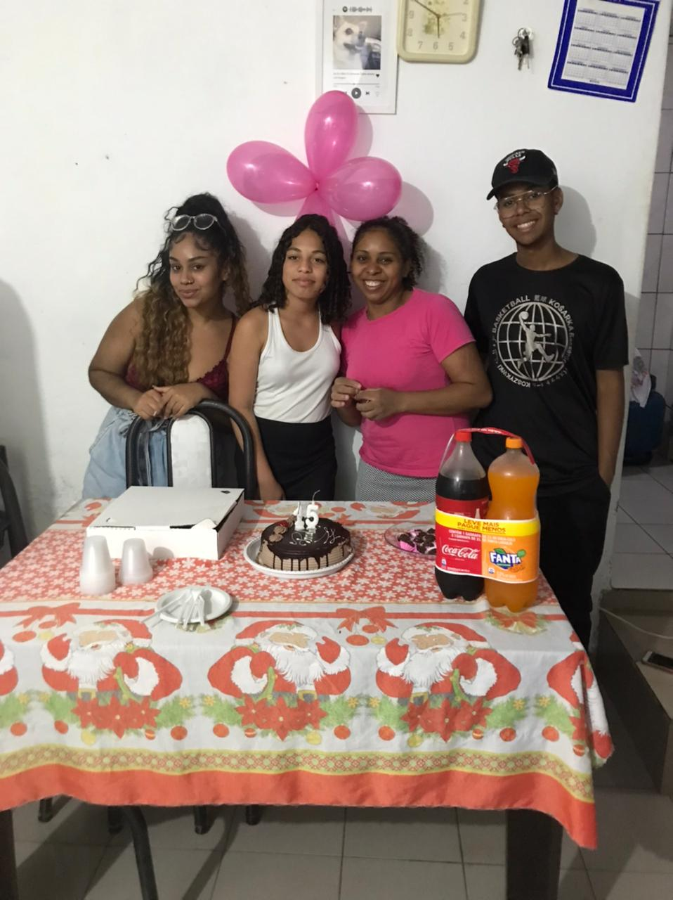

Meu nome é Matheus, tenho 21 anos e atualmente curso Engenharia de Software na Uninter. Meu principal hobbie é treinar: a academia se tornou uma verdadeira terapia para mim. Também gosto muito de jogar vôlei — no meu trabalho montamos uma quadra no estacionamento e sempre jogo com meus colegas, o que torna o dia muito mais leve. Sempre tive interesse por instrumentos musicais, apesar de tocar apenas bateria até hoje, e sonho em aprender outros no futuro. Além disso, desde criança tenho paixão por esportes como futebol, basquete e skate, embora hoje em dia eu não consiga praticar todos por falta de tempo. Tecnologia e atividade física são minhas duas maiores paixões.

Moro com meu pai, minha mãe, minha irmã, uma menina que cuido e vários animais adotados. Sou de São Paulo, Zona Sul, mais especificamente do Parque Santo Antônio (PSA). Cresci aqui e nunca saí, sendo o único da família que permaneceu sempre em São Paulo, enquanto os outros viajaram bastante. Tenho muitos sonhos, e um dos maiores é viajar pelo Brasil e conhecer suas belezas naturais, além de outros países. Quando conquistar estabilidade financeira, pretendo explorar tanto meu país quanto o mundo.
